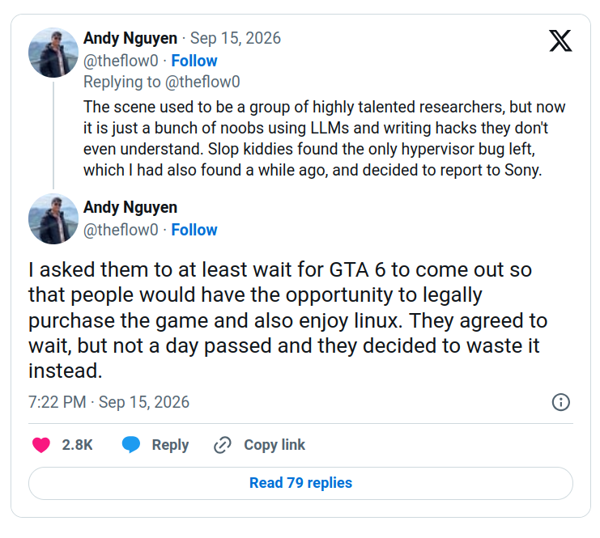

Desbloqueio do Switch 2 e PS5
A comunidade de jailbreaks e ‘hackeamento’ de consoles está correndo numa velocidade insana fazendo uso de LLMs. Isso tem partes boas e ruins e com certeza muda a maneira como Nintendo, Sony e Microsoft terão que lidar com seu hardware no futuro.
Veja também no canal::
Intro: o que é ‘jailbreak’?
-
Um videogame também é um computador, mas:
- Hardware específico e proprietário, sistema operacional específico proprietário
- Interface de ‘entrada de dados’ limitada
- Carregamento de código limitado ao assinado pela empresa
- Medidas de segurança, DRM, anti cópia e etc…
-
No geral fazer o desbloqueio ou ‘jailbreak’ é superar de alguma maneira essas medidas de segurança para chegar no objetivo final de rodar código arbitrário e não assinado pela empresa que desenvolveu o hardware
-
Isso significa pirataria dos jogos…
-
…mas também significa homebrew, como por exemplo: rodar Linux
É usar o computador colorido e em formato estranho que você comprou como um computador “de verdade”
-
-
Existem diferentes níveis de desbloqueio, pois o software roda em diferentes ‘contextos’ dentro desses videogames. Nem todo jogo tem acesso a todas funções do hardware, a escrever no disco, a carregar outros jogos e etc…
-
Métodos de desbloqueio podem ser por software, por modificação de hardware e etc… Geralmente isso que vai ser chamado o ‘exploit’ ou exploração
- Por exemplo o Wii tinha o ‘Twilight Hack’ que funcionava com um save de Zelda TLP e o ‘Smash Stack’ com um mapa modificado de SSMB e depois o ‘Banner Bomb’ que funcionava com um save corrompido
- Mas antes disso o Wii tinha a modificação de hardware para que o console aceitasse CDs não oficiais contendo cópias dos jogos
-
Quanto mais modernos os consoles, mais medidas de segurança são introduzidas. Atualizações do firmware dos consoles tendem a bloquear exploits antigos e até foram criados métodos impedir que consoles sejam revertidos para firmwares mais antigos (fusíveis na placa mãe)
- A dica é que se você quer fazer o desbloqueio dos seus consoles é melhor deixar eles desatualizados e desconectados da internet
-
Fazia anos que eu não pensava nesse site, mas quando eu mexia muito com isso eu sempre acessava o Newsinside e ele ainda existe. Então fica a recomendação, principalmente porque eles tem um acervo de material muito grande ainda disponível

Finalmente temos o primeiro ‘jailbreak’ do Nintendo Switch 2
https://www.extremetech.com/gaming/switch-2-jailbreak-lets-users-mod-one-of-nintendos-hottest-games
-
Um hacker chamado ‘pepsipu’ mostrou um vídeo do Mario Kart World rodando com um mod de personagens alternativos. Isso foi feito por meio do desbloqueio do Switch 2. Como?
-
Um exploit que roda a partir de um jogo de programação chamado SmileBASIC
- O jogo até o momento que eu escrevo esse roteiro foi retirado da loja
-
Com isso é possível corromper a memória do SmileBASIC e explorar outras vulnerabilidades, o que permite rodar código no contexto do jogo ou fazer escritas em partes do sistema de arquivos do Switch 2
- É um jailbreak que não é permanente, acaba ao desligar o console
- Até o momento não permite fazer todo tipo de coisas que gostaríamos como rodar código não assinado, dumps de jogos e chaves de criptografia, rodar Linux e etc…
-
Até agora não temos a perspectiva de um jailbreak completo, configurável, seguro, conveniente e etc…
- Mas a perspectiva disso existir é real
-
A Nintendo está quieta, mas existe uma grande chance de chegando o lançamento do OOT Remake algumas cabeçam rolem.
O estado da comunidade de homebre do PS5
- Emulador e recompilações de jogos do PS5 no PC:


-
Isso é especialmente crítico, e uma questão de honra e reputação na comunidade, dado o abandono dos jogos físicos pela Sony e a política de jogos exclusivos para o console
- Um emulador/recompilação funcional de PS5 pode permitir que o GTA6 seja jogável no PC muito antes do port oficial acontecer (isso pode acelerar o lançamento oficial tb)
-
Já existem exploits para o PS5 desde 2022, mas recentemente nós tivemos o Lapse, Relapse e Prolapse que permitem o desbloqueio do console usando vulnerabilidades no navegador:
-
O bagulho é elegante demais… só mudar o DNS do seu PS5 para um que serve o exploit e abrir o menu de ajuda do PS5 kkkkk
-
Isso abre as portas para muitas coisas, desde dumps de jogos, jogar jogos piratas, emuladores e até rodar ‘nativamente’ CDs de jogos de PS2 e PS3:


-
Porém, até onde eu entendo, esses exploits não tem acesso a todas as funcionalidades do PS5 e o santo graal são os exploits de ‘hypervisor’, que rodam numa camada bem baixo nível do sistema e tem acesso a todo poder do hardware
-
A Sony está em uma guerra de atualizações/explorações com a comunidade de homebrew e recentemente tivemos essa novelinha aqui:


-
No geral existe um otimismo de vermos o modelo de negócios dessas empresas sendo atacado pela disponibilidade das LLMs e os esforços da comunidade… mas temos que ter cuidado para manter isso tudo como uma comunidade ainda
-
A comunidade de homebrew não é perfeita, ela é movida por ego e popularidade e tem o seu próprio ‘código de honra’, mas ela está em sua melhor forma quando trabalha junta para a preservação do software, revitalização de hardware ‘obsoleto’ e na libertação da tecnologia para todos.
- Não joguem isso fora porque agora uma ferramenta consegue achar vulnerabilidades muito rápido
- A Nintendo pode rodar todas essas ferramentas E tem advogados sheika que vão atrás de você
- … inclusive isso pode significar um fim dos programas bug bounty (mas isso é tópico para o futuro)
-
Eae? Gostaram? Sim, eu agora quero o máximo de videogames antigos desbloqueados para fazer o cluster do meu homelab. Mandem pra mim :)